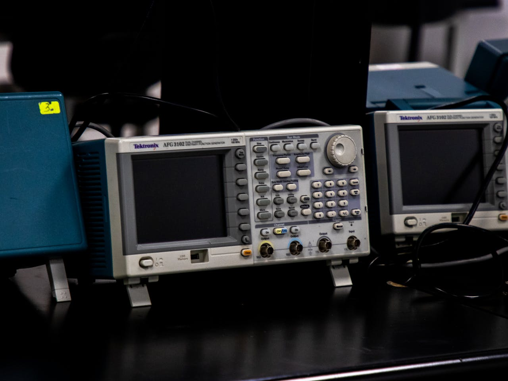
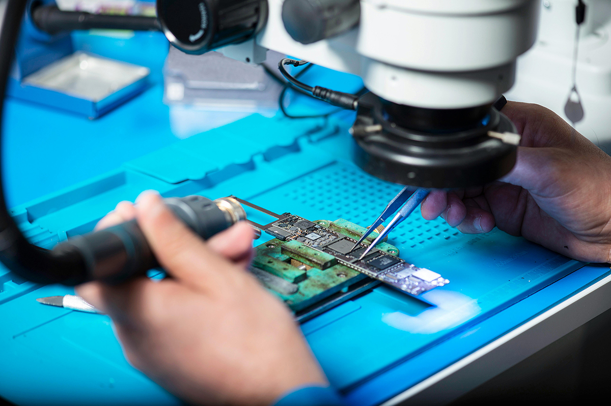

EMC testing is a critical step in bringing electronic products to market, but it is also one of the most unpredictable costs in product development.
Many companies underestimate the true cost of compliance — especially when failures lead to redesign, retesting, and delays.
1. What Determines EMC Testing Cost
The cost of EMC testing depends on several factors, including product complexity, required standards, and testing scope.

More complex products typically require longer testing time and more test cases, which directly increases cost.
2. Certification vs Pre-Compliance Cost
Formal certification testing is usually the most expensive stage. However, skipping pre-compliance testing often leads to higher overall cost.

Pre-compliance testing is relatively low cost but can identify major risks early, reducing the likelihood of failure during certification.
3. Hidden Costs of EMC Failure
The biggest cost is not the test itself — it is failure. When a product fails EMC testing, the impact goes far beyond the lab fee.

Failures often require redesign, additional prototypes, and repeated testing, significantly increasing total project cost.
4. How to Reduce EMC Testing Cost
The most effective way to control cost is to reduce risk before testing begins.

By optimizing design, enclosure structure, and system integration early, companies can improve first-pass success rates and minimize unexpected expenses.
Conclusion
EMC testing cost is not just about lab fees — it is about the entire development process. Poor planning leads to higher costs, while early risk control reduces both time and expense.
Investing in pre-compliance evaluation and proper engineering design is the most cost-effective strategy for successful certification.